pacman::p_load(sf, spatstat,tmap, tidyverse,knitr,sparr)Hands-on 3: Spatio-Temporal Point Patterns Analysis
1 Overview
A spatio-temporal point process (also called space-time or spatial-temporal point process) is a random collection of points, where each point represents the time and location of an event. Examples of events include incidence of disease, sightings or births of a species, or the occurrences of fires, earthquakes, lightning strikes, tsunamis, or volcanic eruptions.
The analysis of spatio-temporal point patterns is becoming increasingly necessary, given the rapid emergence of geographically and temporally indexed data in a wide range of fields. Several spatio-temporal point patterns analysis methods have been introduced and implemented in R in the last ten years. This chapter shows how various R packages can be combined to run a set of spatio-temporal point pattern analyses in a guided and intuitive way. A real world forest fire events in Kepulauan Bangka Belitung, Indonesia from 1st January 2023 to 31st December 2023 is used to illustrate the methods, procedures and interpretations.
1.1 The Research Questions
- Are the locations of forest fire in Kepulauan Bangka Belitung spatial and spatio-temporally independent?
- If the answer is NO, where and when the observed forest fire locations tend to cluster?
2 The Data
To provide answers to the questions above, two data sets will be used. They are:
forestfires, a csv file provides locations of forest fire detected from the Moderate Resolution Imaging Spectroradiometer (MODIS) sensor data. The data are downloaded from Fire Information for Resource Management System. For the purpose of this exercise, only forest fires within Kepulauan Bangka Belitung will be used.
Kepulauan_Bangka_Belitung, an ESRI shapefile showing the sub-district (i.e. kelurahan) boundary of Kepulauan Bangka Belitung. The data set was downloaded from Indonesia Geospatial portal. The original data covers the whole Indonesia. For the purpose of this exercise, only sub-districts within Kepulauan Bangka Belitung are extracted.
3 Import Libraries
| Library | Desc |
|---|---|
| sf | handling geospatial data |
| tmap | visualization for geospatial data |
| tidyverse | handling data including packages readr, tidyr and dplyr |
| sparr | provides functions to estimate fixed and adaptive kernel-smoothed spatial relative risk surfaces via the density-ratio method and perform subsequent inference. |
| spatstat | for point pattern analysis |
4 Import Data
4.1 Import Study Area
We use st_union() to remove all the sub-borders and merge them into one big polygon:
# The raw file is WGS84
kbb_sf <- st_read(dsn="Data/rawdata",
layer = "Kepulauan_Bangka_Belitung") %>%
st_union() %>%
st_zm(drop = TRUE, what="ZM") %>%
st_transform(crs = 32748)Reading layer `Kepulauan_Bangka_Belitung' from data source
`/Users/johsuan/johsuanh/ISSS626-GAA/Hands-on/Hands-on-Ex03/Data/rawdata'
using driver `ESRI Shapefile'
Simple feature collection with 297 features and 26 fields
Geometry type: POLYGON
Dimension: XYZ
Bounding box: xmin: 105.1085 ymin: -3.116593 xmax: 106.8488 ymax: -1.501603
z_range: zmin: 0 zmax: 0
Geodetic CRS: WGS 84tm_shape(kbb_sf)+
tm_polygons()+
tm_layout(frame = FALSE,
bg.color = "#f6f6f6")+
tm_title("Kepulauan Bangka Belitung")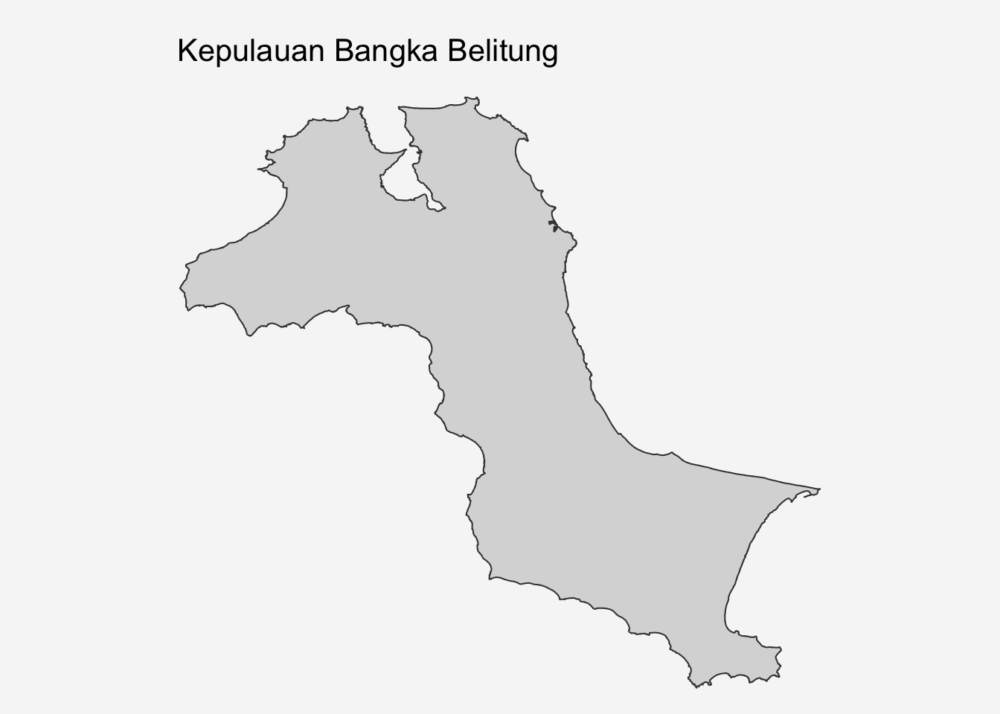
UTM 32748
- Type: Projected coordinate systems
- Coverage: Indonesia and parts of Southeast Asia
- Zone: UTM Zone 48 South (102°E to 108°E, south of equator)
- Use: Regional projection for Indonesia
- Units: Meters
4.1.1 Converting to OWIN object
Next, as.owin() is used to convert kbb into an owin object required by spatstat
kbb_owin = as.owin(kbb_sf)
kbb_owinwindow: polygonal boundary
enclosing rectangle: [512066.8, 705559.4] x [9655398, 9834006] unitsclass() is used to confirm if the output is indeed an owin object:
class(kbb_owin)[1] "owin"4.2 Import & Prepare Forest Fire Data
The dataset documents forest fires detected by satellites between 2023-01-10 and 2023-12-18, comprising of 741 observations.
fire_sf <- read_csv("Data/forestfires.csv") %>%
st_as_sf(coords=c("longitude", "latitude"), crs = 4326) %>% #raw GPS coordinates
st_transform(crs = 32748) # IN projected coordinate systemkable(head(fire_sf,5))| brightness | scan | track | acq_date | acq_time | satellite | instrument | confidence | version | bright_t31 | frp | daynight | type | geometry |
|---|---|---|---|---|---|---|---|---|---|---|---|---|---|
| 312.3 | 1.3 | 1.1 | 2023-01-10 | 629 | Aqua | MODIS | 67 | 61.03 | 281.6 | 10.8 | D | 0 | POINT (606178.8 9703062) |
| 314.5 | 1.2 | 1.1 | 2023-01-10 | 629 | Aqua | MODIS | 70 | 61.03 | 286.1 | 10.2 | D | 0 | POINT (661410.6 9683536) |
| 315.4 | 1.2 | 1.1 | 2023-01-10 | 629 | Aqua | MODIS | 71 | 61.03 | 288.2 | 11.4 | D | 0 | POINT (637808.8 9682757) |
| 308.9 | 1.2 | 1.1 | 2023-01-10 | 629 | Aqua | MODIS | 54 | 61.03 | 284.1 | 7.1 | D | 0 | POINT (654882.2 9690665) |
| 308.5 | 1.2 | 1.1 | 2023-01-10 | 629 | Aqua | MODIS | 33 | 61.03 | 285.8 | 6.2 | D | 0 | POINT (669933.6 9697468) |
summary(fire_sf) brightness scan track acq_date
Min. :300.3 Min. :1.000 Min. :1.000 Min. :2023-01-10
1st Qu.:314.3 1st Qu.:1.000 1st Qu.:1.000 1st Qu.:2023-08-01
Median :318.7 Median :1.100 Median :1.100 Median :2023-09-15
Mean :320.9 Mean :1.315 Mean :1.119 Mean :2023-09-02
3rd Qu.:324.7 3rd Qu.:1.400 3rd Qu.:1.200 3rd Qu.:2023-10-14
Max. :396.2 Max. :4.200 Max. :1.900 Max. :2023-12-18
acq_time satellite instrument confidence
Min. : 248 Length:741 Length:741 Min. : 0.0
1st Qu.: 633 Class :character Class :character 1st Qu.: 57.0
Median : 649 Mode :character Mode :character Median : 68.0
Mean : 731 Mean : 65.6
3rd Qu.: 659 3rd Qu.: 77.0
Max. :1915 Max. :100.0
version bright_t31 frp daynight type
Min. :61.03 Min. :274.9 Min. : 3.0 Length:741 Min. :0
1st Qu.:61.03 1st Qu.:293.6 1st Qu.: 8.4 Class :character 1st Qu.:0
Median :61.03 Median :296.6 Median : 13.2 Mode :character Median :0
Mean :61.03 Mean :296.1 Mean : 20.1 Mean :0
3rd Qu.:61.03 3rd Qu.:299.2 3rd Qu.: 21.8 3rd Qu.:0
Max. :61.03 Max. :311.2 Max. :220.2 Max. :0
geometry
POINT :741
epsg:32748 : 0
+proj=utm ...: 0
Because ppp object only accept numerical or character as mark. The code chunk below is used to convert data type of acq_date to numeric:
fire_sf <- fire_sf %>%
mutate(DayofYear = yday(acq_date),
Month_num = month(acq_date),
Month_fac = month(acq_date,
label = TRUE,
abbr = FALSE))5 Visualize the Fire Points
5.1 Overall Plot
tm_shape(kbb_sf)+
tm_polygons()+
tm_shape(fire_sf)+
tm_dots(size = 0.2, shape = 16)+
tm_layout(frame = FALSE,
bg.color = "#f6f6f6")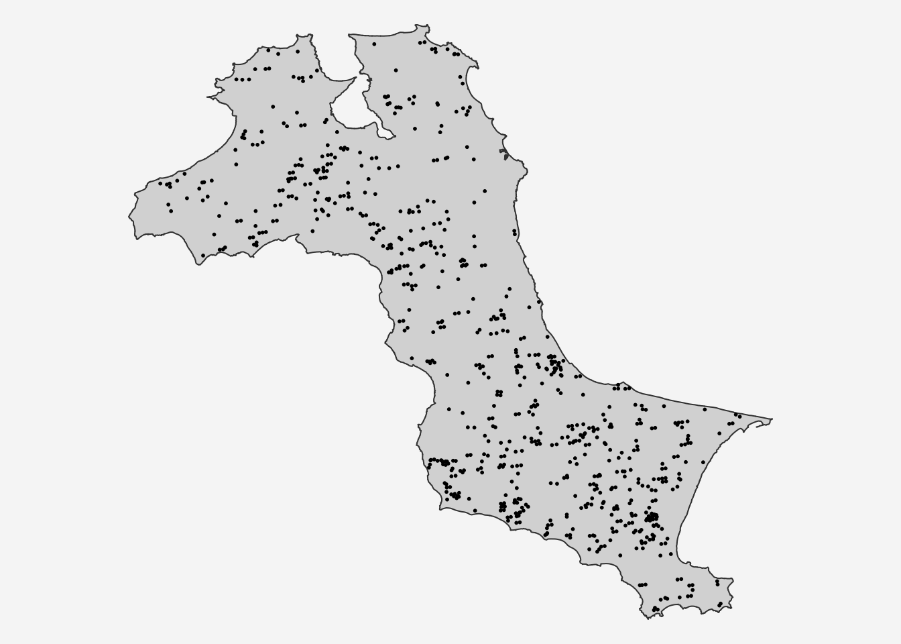
5.2 Forest Fires Distribution by Month
tm_shape(kbb_sf)+
tm_polygons()+
tm_shape(fire_sf)+
tm_dots(size = 0.2, shape = 16)+
tm_title("KKB Monthly Distribution of Forest Fires in 2023",
position = tm_pos_out(cell.h = "center",
cell.v = "top",
pos.h = "center"))+
tm_facets(nrow = 3, ncol = 4,
by = "Month_fac",
free.coords = FALSE)+
tm_layout(frame = FALSE,
bg.color = "#f6f6f6",
panel.label.bg.color = "#AFCD6F",
inner.margins = c(0, 0.05, 0.2, 0.05)) #bottom, left, top, right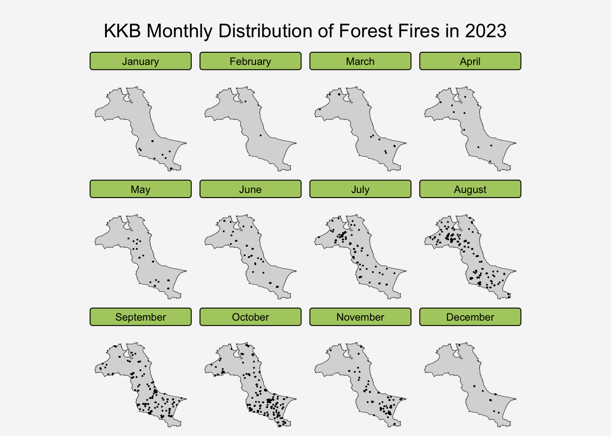
As shown in the graph above, KBB overall experienced fewer forest fires from December to June, while more incidents occurred from July to November.
Spatially, more frequent and densely clustered incidents occurred in the northern region during July and August, whereas the southern region saw increased fire activity from September to November.
Main Title of the Graph
According to the tmap documentation, the main.title setting within tm_layout() is deprecated, and it now recommends using tm_title() instead.
To add a main title for the entire graph, use tm_title(position = tm_pos_out()). For a top-centered title, adjust the position parameters as follows:
tm_title("Title",
position = tm_pos_out(cell.h = "center",
cell.v = "top",
pos.h = "center"))or
tm_title("Title",
position = tm_pos_out("center","top","center"))
Tip
free.coords = TRUEshows maximum detail by allowing each facet to zoom independently.free.coords = FALSEmaintains spatial reference points across all facets.
6 Compute STKDE by Month
In the previous hands-on exercise, we learned to use spatstat’s density() function to plot KDE maps. The more advanced spatio-temporal KDE function (spattemp.density() from sparr) can analyze not only spatial data but also incorporates temporal data.
In this section, we will learn how to compute STKDE by using spattemp.density() of sparr package.
The important arguments of the function includes:
| Argument | Description |
|---|---|
| h (spatial) | Fixed bandwidth to smooth the spatial margin. A numeric value > 0. If unsupplied, the oversmoothing bandwidth is used as per OS. |
| lambda (temporal) | Fixed bandwidth to smooth the temporal margin; a numeric value > 0. If unsupplied, the function internally computes the Sheather-Jones bandwith using bw.SJ (Sheather & Jones, 1991). |
| tt (attribute) | A numeric vector of equal length to the number of points in pp, giving the time corresponding to each spatial observation. If unsupplied, the function attempts to use the values in the marks attribute of the ppp.object in pp. |
6.1 Extract forest fires by month
The code chunk below is used to keep only the month info and geometry of fire_sf sf data.frame.
The result, fire_month, is still an sf object with geometry and one attribute column (month):
fire_month <- fire_sf %>%
select(Month_num)
kable(head(fire_month,5))| Month_num | geometry |
|---|---|
| 1 | POINT (606178.8 9703062) |
| 1 | POINT (661410.6 9683536) |
| 1 | POINT (637808.8 9682757) |
| 1 | POINT (654882.2 9690665) |
| 1 | POINT (669933.6 9697468) |
6.2 Create ppp Object
Once our data is in ppp format, we can use spatstat functions like: density.ppp(), Kest(),envelope() and sparr function: spattemp.density()
fire_month_ppp <- as.ppp(fire_month)
fire_month_pppMarked planar point pattern: 741 points
marks are numeric, of storage type 'double'
window: rectangle = [521564.1, 695791] x [9658137, 9828767] unitsNext, we use summary() to check the points
summary(fire_month_ppp)Marked planar point pattern: 741 points
Average intensity 2.49258e-08 points per square unit
Coordinates are given to 10 decimal places
marks are numeric, of type 'double'
Summary:
Min. 1st Qu. Median Mean 3rd Qu. Max.
1.000 8.000 9.000 8.579 10.000 12.000
Window: rectangle = [521564.1, 695791] x [9658137, 9828767] units
(174200 x 170600 units)
Window area = 29728200000 square unitsNext, we check if there are any duplicated point events:
any(duplicated(fire_month_ppp))[1] FALSE6.3 Create the Study Window
fire_month_owin <- fire_month_ppp[kbb_owin]
summary(fire_month_owin)Marked planar point pattern: 741 points
Average intensity 6.42469e-08 points per square unit
Coordinates are given to 10 decimal places
marks are numeric, of type 'double'
Summary:
Min. 1st Qu. Median Mean 3rd Qu. Max.
1.000 8.000 9.000 8.579 10.000 12.000
Window: polygonal boundary
single connected closed polygon with 47493 vertices
enclosing rectangle: [512066.8, 705559.4] x [9655398, 9834006] units
(193500 x 178600 units)
Window area = 11533600000 square units
Fraction of frame area: 0.334As a good practice, plot() is used to plot fire_month_owin, so that we can examine the correctness of the output object:
par(bg = "#f6f6f6")
plot(fire_month_owin,
main = "Fire Incidents by Month")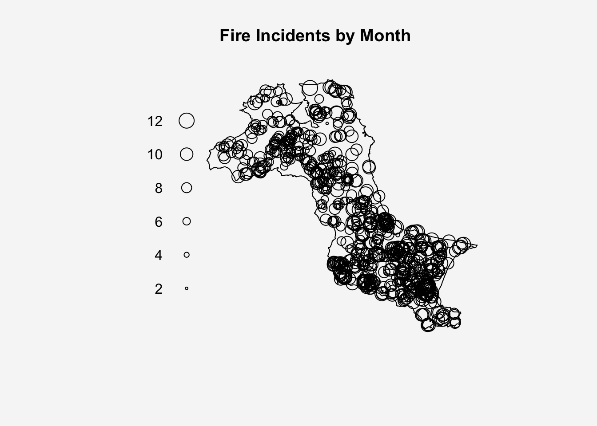
6.4 Compute Spatio-temperal KDE
spattemp.density() of sparr package is used to compute the STKDE:
st_kde <- spattemp.density(fire_month_owin)
summary(st_kde)Spatiotemporal Kernel Density Estimate
Bandwidths
h = 15102.47 (spatial)
lambda = 0.0304 (temporal)
No. of observations
741
Spatial bound
Type: polygonal
2D enclosure: [512066.8, 705559.4] x [9655398, 9834006]
Temporal bound
[1, 12]
Evaluation
128 x 128 x 12 trivariate lattice
Density range: [1.233458e-27, 8.202976e-10]6.5 Plot the Spatio-temperal KDE Object
plot() of R base is used to the KDE for between July 2023 - December 2023:
tims <- c(7,8,9,10,11,12)
par(bg = "#f6f6f6",mfcol=c(2,3))
for(i in tims){
plot(st_kde, i,
override.par=FALSE,
fix.range=TRUE,
main=paste("KDE at month",i))
}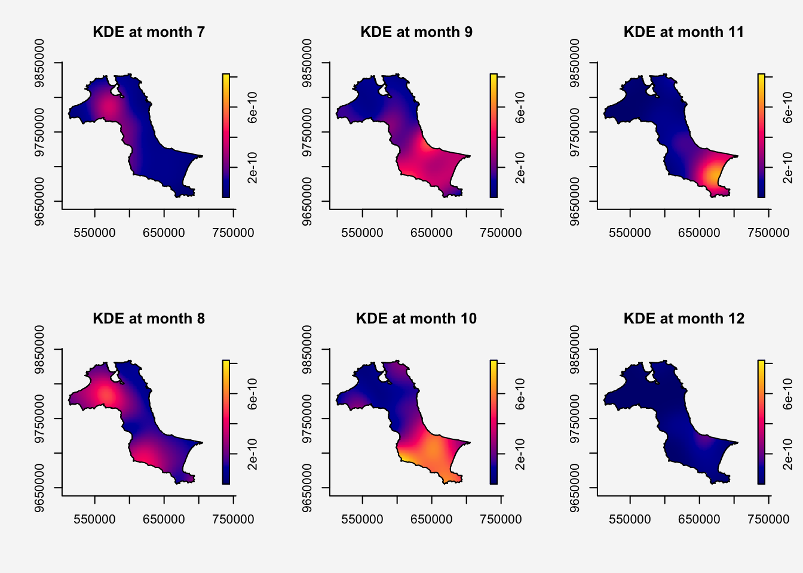
7 Compute Spatio-temperal KDE by Day of Year
7.1 Create ppp
fire_yday_ppp <- fire_sf %>%
select(DayofYear) %>%
as.ppp()
summary(fire_yday_ppp)Marked planar point pattern: 741 points
Average intensity 2.49258e-08 points per square unit
Coordinates are given to 10 decimal places
marks are numeric, of type 'double'
Summary:
Min. 1st Qu. Median Mean 3rd Qu. Max.
10.0 213.0 258.0 245.9 287.0 352.0
Window: rectangle = [521564.1, 695791] x [9658137, 9828767] units
(174200 x 170600 units)
Window area = 29728200000 square units7.2 Create the Study Window
fire_yday_owin <- fire_yday_ppp[kbb_owin]
summary(fire_yday_owin)Marked planar point pattern: 741 points
Average intensity 6.42469e-08 points per square unit
Coordinates are given to 10 decimal places
marks are numeric, of type 'double'
Summary:
Min. 1st Qu. Median Mean 3rd Qu. Max.
10.0 213.0 258.0 245.9 287.0 352.0
Window: polygonal boundary
single connected closed polygon with 47493 vertices
enclosing rectangle: [512066.8, 705559.4] x [9655398, 9834006] units
(193500 x 178600 units)
Window area = 11533600000 square units
Fraction of frame area: 0.3347.3 Compute Spatio-temperal KDE
kde_yday <- spattemp.density(
fire_yday_owin)
summary(kde_yday)Spatiotemporal Kernel Density Estimate
Bandwidths
h = 15102.47 (spatial)
lambda = 6.3198 (temporal)
No. of observations
741
Spatial bound
Type: polygonal
2D enclosure: [512066.8, 705559.4] x [9655398, 9834006]
Temporal bound
[10, 352]
Evaluation
128 x 128 x 343 trivariate lattice
Density range: [3.959516e-27, 2.751287e-12]7.4 Plot the Spatio-temperal KDE Object
For efficiency purposes, we focus on October since it had the highest density of forest fires.
First, we filter data to include only October incidents:
select_yday <- fire_sf %>%
filter(Month_fac == "October") %>%
pull(DayofYear) %>%
unique()
select_yday [1] 274 276 277 278 279 280 281 283 284 285 286 287 288 289 290 292 294 295 297
[20] 298 299 300 301 302Next, we use the same for-loop structure to generate daily plots for October:
par(bg = "#f6f6f6", mfcol=c(2,3)) # 2x3 plots per page
for (i in select_yday) {
plot(kde_yday, i,
override.par=FALSE,
fix.range=TRUE,
main=paste("KDE at Day of Year", i))
}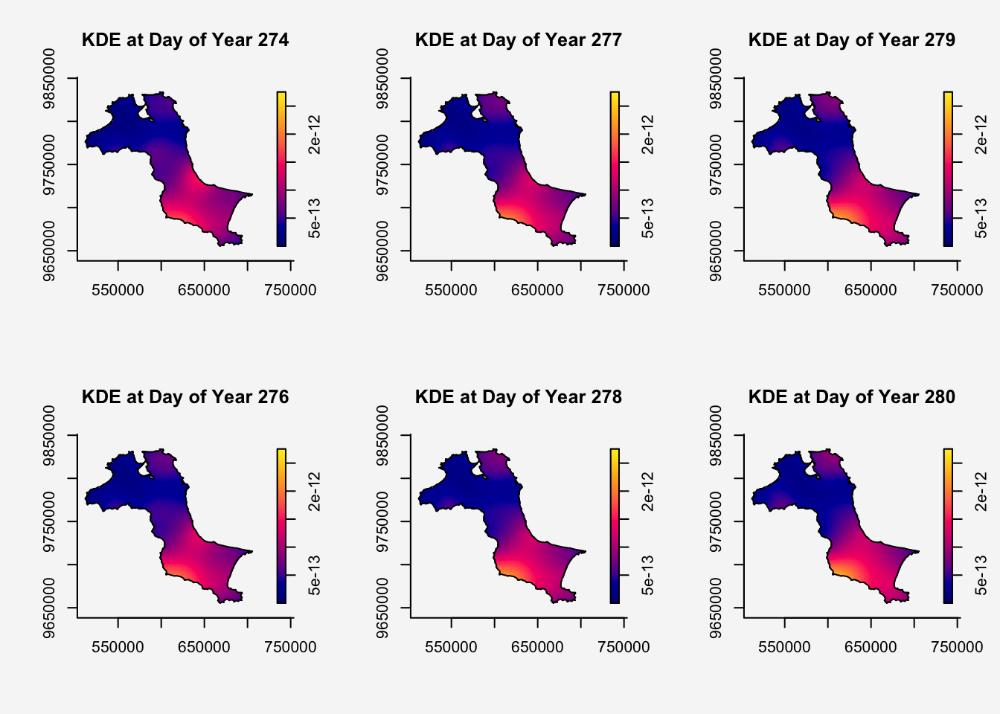
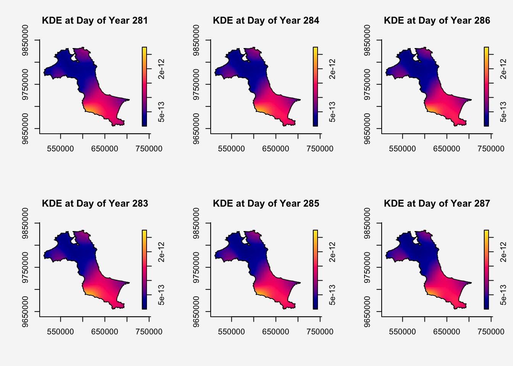
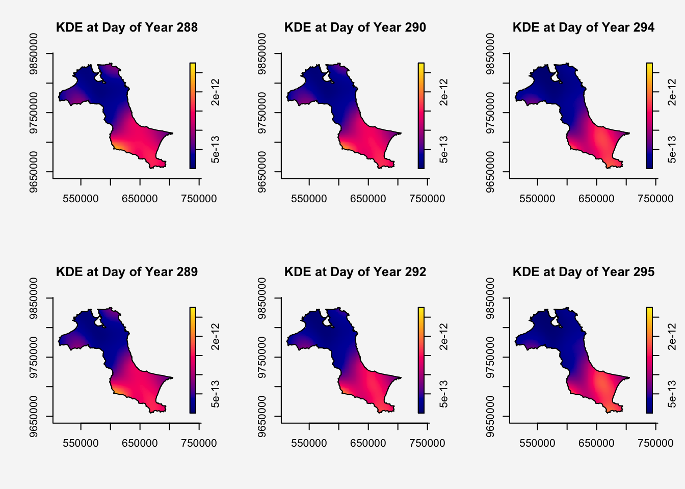
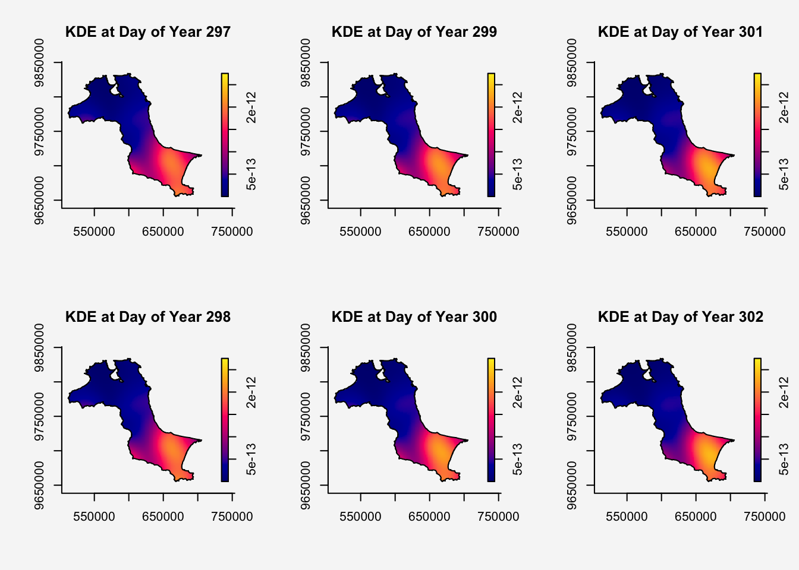
8 Compute STKDE by Day of Year (Improved method)
One of the nice function provides in sparr package is BOOT.spattemp(). It support bandwidth selection for standalone spatio-temporal density/intensity based on bootstrap estimation of the MISE, providing an isotropic scalar spatial bandwidth and a scalar temporal bandwidth.
Code chunk below uses BOOT.spattemp() to determine both the spatial bandwidth and the scalar temporal bandwidth.
set.seed(1234)
BOOT.spattemp(fire_yday_owin) Initialising...Done.
Optimising...
h = 15102.47 ; lambda = 16.84806
h = 16612.72 ; lambda = 16.84806
h = 15102.47 ; lambda = 1527.095
h = 15480.03 ; lambda = 771.9715
h = 15668.81 ; lambda = 394.4098
h = 15763.2 ; lambda = 205.6289
h = 15810.4 ; lambda = 111.2385
h = 15833.99 ; lambda = 64.04328
h = 15845.79 ; lambda = 40.44567
h = 15851.69 ; lambda = 28.64687
h = 15863.49 ; lambda = 5.049258
h = 15854.64 ; lambda = 22.74746
h = 15860.54 ; lambda = 10.94866
h = 15859.07 ; lambda = 13.89836
h = 14348.82 ; lambda = 13.89836
h = 13216.87 ; lambda = 12.42351
h = 12460.27 ; lambda = 15.37321
h = 10760.88 ; lambda = 16.11064
h = 8875.282 ; lambda = 11.68608
h = 10432.08 ; lambda = 12.97658
h = 7976.084 ; lambda = 16.66371
h = 9286.281 ; lambda = 15.60366
h = 9615.08 ; lambda = 18.73771
h = 9206.581 ; lambda = 21.61828
h = 8140.483 ; lambda = 18.23073
h = 8795.582 ; lambda = 17.70071
h = 9124.381 ; lambda = 20.83477
h = 9164.856 ; lambda = 19.52699
h = 8345.358 ; lambda = 18.48998
h = 9297.65 ; lambda = 18.67578
h = 8928.375 ; lambda = 16.8495
h = 9105.736 ; lambda = 18.85762
Done. h lambda
9105.73611 18.85762 8.1 Compute Spatio-temperal KDE
Now, the STKDE will be derived by using h and lambda values derive in previous step
kde_yday <- spattemp.density(fire_yday_owin,
h = 9105.73611,
lambda = 18.85762)
summary(kde_yday)Spatiotemporal Kernel Density Estimate
Bandwidths
h = 9105.736 (spatial)
lambda = 18.8576 (temporal)
No. of observations
741
Spatial bound
Type: polygonal
2D enclosure: [512066.8, 705559.4] x [9655398, 9834006]
Temporal bound
[10, 352]
Evaluation
128 x 128 x 343 trivariate lattice
Density range: [1.782256e-19, 2.430868e-12]8.2 Plot the Spatio-temperal KDE Object
par(bg = "#f6f6f6", mfcol=c(2,3)) # 2x3 plots per page
for (i in select_yday) {
plot(kde_yday, i,
override.par=FALSE,
fix.range=TRUE,
main=paste("KDE at Day of Year", i))
}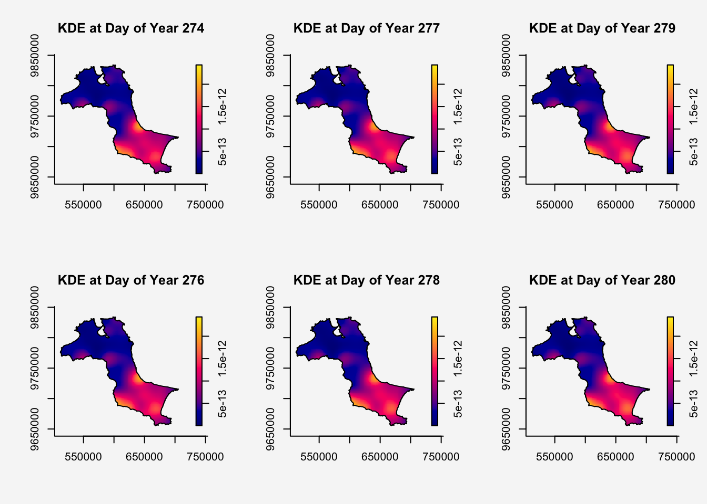
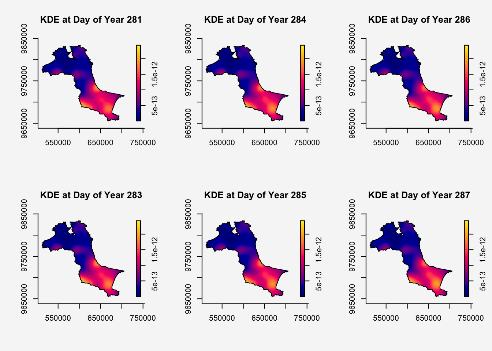
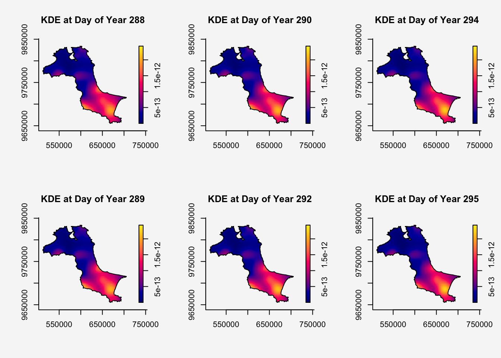
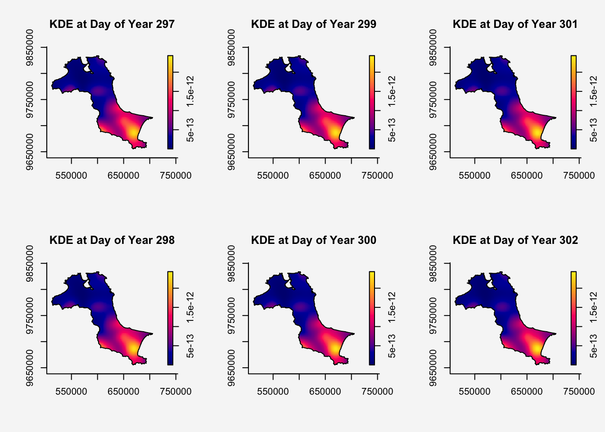
Compared to the orignal result, the boot.spattemp() suggests fire data benefits from finer spatial resolution but broader temporal smoothing for better density estimation:
| w/o BOOT.spattemp | with BOOT.spattemp | |
|---|---|---|
| h (spatial) | 15,102.47 | 9105.736 |
| lambda (temporal) | 6.32 | 18.8576 |
Compared to the original STKDE graphs, we can now clearly see the hot spots in the southern region during October.
9 Reference
- Kam, T.S. (2025). Spatio-Temporal Point Patterns Analysis